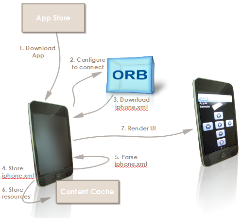

The following attempts to explain the flow of data exchange that occurs between the OpenRemote iPhone native console application and OpenRemote controller to render a user interface and react to user interface events.
Installation and Configuration

1. Download application from iPhone App Store.
2. Configure application to connect to OpenRemote controller.
The iPhone must be configured to access the local network first over WiFi (including wireless security). An OpenRemote Box (ORB) hosting the controller could be used as a WiFi access point. Alternatively ORB or controller software can be made available on any IP address on the local network.
Controller can auto-discover the controller instance over a multicast, if multicast is enabled. Otherwise, a connection URL including IP address (or host name) and port can be entered manually.
3. Download a user interface XML descriptor from the controller.
4. Store the XML descriptor on the iPhone.
5. Parse the descriptor. Create the required data structures for the user interface based on the XML document content. Locate the icon image source URLs from the descriptor and download the images and potentially other resources from the OpenRemote controller.
6. Store downloaded external resources on iPhone, if any.
Use Flow
7. Render user interface based on the data structures created in step #5. Each button is associated with an unique ID that will be tracked as user interface events are generated.
8. Wait for user interface events on button selection and react to them. A tap on the icon area would generate an event associated with a button ID and an action identifier, for example "ON_PRESS_EVENT(ID=Button1)".
9. Generate a HTTP request to a known URL on the OpenRemote controller (resolved as part of step #2) which includes the icon ID and action identifier.
{kind=link}